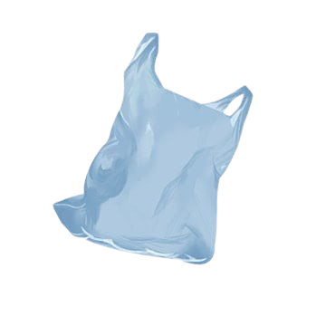

Plastic #1 (PET)
Этот пластик используется для бутылок из-под воды и газировки. Он легко перерабатывается и часто применяется повторно.
Plastic #2 (HDPE)

Прочный и устойчивый к химии пластик, из которого делают бутылки для шампуня, пакеты и канистры. Один из самых безопасных видов для переработки
Plastic #3 (PVC)
Используется в трубах, строительных материалах и обивке. Сложен в переработке и может выделять токсичные вещества при сжигании.
Plastic #4 (LDPE)

Применяется в мягких упаковках, полиэтиленовых пакетах и пищевой плёнке. Перерабатывается редко, но считается сравнительно безопасным.
Plastic #5 (PP)

Этот пластик устойчив к высоким температурам и часто используется в контейнерах для еды и крышках. Легко поддаётся повторной переработке.
Plastic #6 (PS)
Используется в одноразовой посуде, стаканах и упаковке. Может быть опасен при нагревании, плохо разлагается и редко перерабатывается.
Plastic #7 (Other)

Это смесь разных пластиков, которые трудно переработать. Часто используется в бутылках для спортпита, очках, CD-дисках и т.д.
Metal

Металл легко перерабатывается и может использоваться бесконечное число раз без потери качества. На переработку обычно идут алюминиевые банки, консервные банки и фольга
Glass
Стекло можно перерабатывать бесконечно без потери прочности или прозрачности. Бутылки, банки и другие стеклянные изделия — самые частые объекты переработки
Paper
Бумагу можно перерабатывать 5–7 раз, прежде чем волокна станут слишком короткими.
Газеты, картон и офисная бумага — самые распространённые материалы в переработке.
ТЕСТ